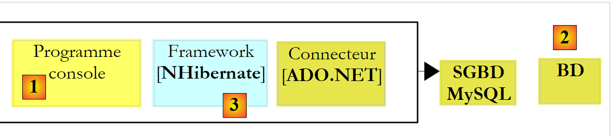
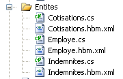
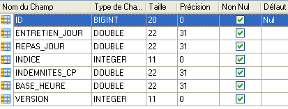
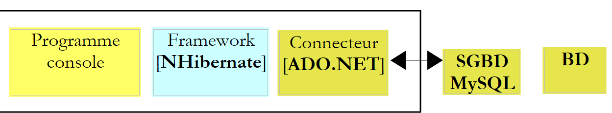

6. Introducción al ORM NHibernate
Este capítulo es una breve introducción a NHibernate, el equivalente en .NET del marco Java Hibernate. Para una introducción completa, consulte:
Título: NHibernate in Action, Autor: Pierre-Henri Kuaté, Editorial: Manning, ISBN-13: 978-1932394924
Un ORM (mapeador relacional de objetos) es un conjunto de bibliotecas que permite a un programa que utiliza una base de datos operar sobre ella sin emitir comandos SQL explícitos y sin conocer los detalles del SGBD que se está utilizando.
Requisitos previos
En una escala de [principiante-intermedio-avanzado], este documento se clasifica en la categoría [intermedio]. Para comprenderlo se requieren varios requisitos previos que se pueden encontrar en algunos de los documentos que he escrito:
- C# 2008: [Aprender C# versión 3.0 con el marco .NET 3.5]
- [Spring IoC], disponible en la URL [Spring IoC para .NET]. Presenta los conceptos básicos de la inversión de control (IoC) o la inyección de dependencias (DI) en el marco Spring.NET [Spring.NET | Página de inicio].
En ocasiones, al principio de los párrafos de este documento se incluyen recomendaciones de lectura. Estas hacen referencia a los documentos anteriores.
Herramientas
Las herramientas utilizadas en este estudio de caso están disponibles gratuitamente en la web. Son las siguientes (diciembre de 2011):
- Nhibernate 3.2, disponible en [http://nhforge.org/Default.aspx]
- Spring.net 1.3.2, disponible en la URL [http://www.springframework.net]. El marco Spring.net es muy completo. Aquí solo utilizaremos la biblioteca que proporciona para facilitar el uso del marco Nhibernate.
- Log4net 1.2.10, disponible en [http://logging.apache.org/log4net]. Este marco de registro es utilizado por Nhibernate.
- NUnit 2.5, disponible en [http://www.nunit.org/]. Este marco de pruebas unitarias es el equivalente en .NET del marco JUnit para la plataforma Java.
- El controlador ADO.NET 6.4.4 para el SGBD MySQL 5 está disponible en [http://dev.mysql.com/downloads/connector/net]
Todas las DLL necesarias para los proyectos de Visual Studio 2010 se han compilado en una carpeta [libnet4]:
 |
6.1. El papel de NHIBERNATE en una arquitectura .NET por capas
Una aplicación .NET que utilice una base de datos puede estructurarse en capas de la siguiente manera:
 |
La capa [DAO] se comunica con el SGBD a través de la API ADO.NET (véase la sección 3.3). En la arquitectura anterior, el conector [ADO.NET] está vinculado al SGBD. Por lo tanto, la clase que implementa la interfaz [IDbConnection] es:
- la clase [MySQLConnection] para el SGBD MySQL
- la clase [SQLConnection] para el SGBD SQLServer
La capa [DAO] depende, por tanto, del SGBD utilizado. Algunos marcos de trabajo (Linq, iBatis.net, NHibernate) eliminan esta restricción añadiendo una capa adicional entre la capa [DAO] y el conector [ADO.NET] del SGBD en uso. En este caso, utilizaremos el marco de trabajo [NHibernate].
 |
En el diagrama anterior, la capa [DAO] ya no se comunica con el conector [ADO.NET], sino con el marco NHibernate, que le proporciona una interfaz independiente del conector [ADO.NET] utilizado. Esta arquitectura permite cambiar de SGBD sin modificar la capa [DAO]. Solo es necesario cambiar el conector [ADO.NET].
6.2. La base de datos de ejemplo
Para mostrar cómo trabajar con NHibernate, utilizaremos la siguiente base de datos MySQL [dbpam_nhibernate] descrita en la sección 3.1. Al exportar la estructura de la base de datos a un archivo SQL se obtiene el siguiente resultado:
Obsérvese que en las líneas 6, 20 y 36, las claves primarias ID tienen el atributo *<a id="autoincrement"></a> * establecido en *autoincrement*. Esto significa que MySQL generará automáticamente los valores de la clave primaria cada vez que se añada un nuevo registro. El desarrollador no tiene que preocuparse por esto.
6.3. El proyecto de demostración en C#
Para presentar la configuración y el uso de NHibernate, utilizaremos la siguiente arquitectura:
 |
Un programa de consola [1] manipulará los datos de la base de datos [2] a través del marco [NHibernate] [3]. Esto nos llevará a presentar:
- los archivos de configuración de NHibernate
- la API de NHibernate
El proyecto en C# tendrá la siguiente estructura:
 |
Los elementos necesarios para el proyecto son los siguientes:
- en [1], las DLL que necesita el proyecto:
- [NHibernate]: la DLL del marco NHibernate
- [MySql.Data]: la DLL para el conector ADO.NET del SGBD MySQL
- [log4net]: la DLL del marco Log4net para generar registros
- en [2], las clases que representan las tablas de la base de datos
- en [3], el archivo [App.config] que configura toda la aplicación, incluido el marco [NHibernate]
- en [4], aplicaciones de consola de prueba
6.3.1. Configuración de la conexión a la base de datos
Volvamos a la arquitectura de prueba:
 |
Como se muestra arriba, [NHibernate] debe poder acceder a la base de datos. Para ello, necesita cierta información:
- el SGBD que gestiona la base de datos (MySQL, SQL Server, Postgres, Oracle, etc.). La mayoría de los SGBD han añadido sus propias extensiones al lenguaje SQL. Al conocer el SGBD, NHibernate puede adaptar las sentencias SQL que emite a ese SGBD específico. NHibernate utiliza el concepto de dialectos SQL.
- los parámetros de conexión a la base de datos (nombre de la base de datos, nombre de usuario del propietario de la conexión y contraseña)
Esta información se puede incluir en el archivo de configuración [App.config]. A continuación se muestra el que se utilizará con una base de datos MySQL 5:
<?xml version="1.0" encoding="utf-8" ?>
<configuration>
<!-- configuration sections -->
<configSections>
<section name="log4net" type="log4net.Config.Log4NetConfigurationSectionHandler,log4net" />
<section name="hibernate-configuration" type="NHibernate.Cfg.ConfigurationSectionHandler, NHibernate" />
</configSections>
<!-- configuration NHibernate -->
<hibernate-configuration xmlns="urn:nhibernate-configuration-2.2">
<session-factory>
<property name="connection.provider">NHibernate.Connection.DriverConnectionProvider</property>
<!--
<property name="connection.driver_class">NHibernate.Driver.MySqlDataDriver</property>
-->
<property name="dialect">NHibernate.Dialect.MySQL5Dialect</property>
<property name="connection.connection_string">
Server=localhost;Database=dbpam_nhibernate;Uid=root;Pwd=;
</property>
<property name="show_sql">false</property>
<mapping assembly="pam-nhibernate-demos"/>
</session-factory>
</hibernate-configuration>
<!-- This section contains the log4net configuration settings -->
<!-- NOTE IMPORTANTE: logs are not active by default. They must be activated programmatically with the log4net.Config.XmlConfigurator.Configure() instruction;
! -->
<log4net>
<!-- Define an output appender (where the logs can go) -->
<appender name="LogFileAppender" type="log4net.Appender.FileAppender, log4net">
<param name="File" value="log.txt" />
<param name="AppendToFile" value="false" />
<layout type="log4net.Layout.PatternLayout, log4net">
<param name="ConversionPattern" value="%d [%t] %-5p %c [%x] <%X{auth}> - %m%n" />
</layout>
</appender>
<appender name="LogDebugAppender" type="log4net.Appender.DebugAppender, log4net">
<layout type="log4net.Layout.PatternLayout, log4net">
<param name="ConversionPattern" value="%d [%t] %-5p %c [%x] <%X{auth}> - %m%n"/>
</layout>
</appender>
<appender name="ConsoleAppender" type="log4net.Appender.ConsoleAppender, log4net">
<layout type="log4net.Layout.PatternLayout, log4net">
<param name="ConversionPattern" value="%d [%t] %-5p %c [%x] <%X{auth}> - %m%n"/>
</layout>
</appender>
<!-- Setup the root category, set the default priority level and add the appender(s) (where the logs will go) -->
<root>
<priority value="INFO" />
<!--
<appender-ref ref="LogFileAppender" />
<appender-ref ref="LogDebugAppender"/>
-->
<appender-ref ref="ConsoleAppender"/>
</root>
<!-- Specify the level for some specific namespaces -->
<!-- Level can be : ALL, DEBUG, INFO, WARN, ERROR, FATAL, OFF -->
<logger name="NHibernate">
<level value="INFO" />
</logger>
</log4net>
</configuration>
- Líneas 4–7: definen secciones de configuración en el archivo [App.config]. Fíjate en la línea 6:
<section name="hibernate-configuration" type="NHibernate.Cfg.ConfigurationSectionHandler, NHibernate" />
Esta línea define la sección de configuración de NHibernate en el archivo [App.config]. Tiene dos atributos: name y type.
- El atributo [name] da nombre a la sección de configuración. Esta sección debe estar delimitada por las etiquetas <name>...</name>, en este caso <hibernate-configuration>...</hibernate-configuration> en las líneas 11–24.
- El atributo [type=class,DLL] especifica el nombre de la clase responsable de gestionar la sección definida por el atributo [name], así como el archivo DLL que contiene dicha clase. En este caso, la clase se llama [NHibernate.Cfg.ConfigurationSectionHandler] y se encuentra en el archivo DLL [NHibernate.dll]. Recuerda que este archivo DLL es una de las referencias del proyecto.
Ahora veamos la sección de configuración de NHibernate:
<!-- configuration NHibernate -->
<hibernate-configuration xmlns="urn:nhibernate-configuration-2.2">
<session-factory>
<property name="connection.provider">NHibernate.Connection.DriverConnectionProvider</property>
<!--
<property name="connection.driver_class">NHibernate.Driver.MySqlDataDriver</property>
-->
<property name="dialect">NHibernate.Dialect.MySQL5Dialect</property>
<property name="connection.connection_string">
Server=localhost;Database=dbpam_nhibernate;Uid=root;Pwd=;
</property>
<property name="show_sql">false</property>
<mapping assembly="pam-nhibernate-demos"/>
</session-factory>
</hibernate-configuration>
- Línea 2: La configuración de NHibernate se encuentra dentro de una etiqueta <hibernate-configuration>. El atributo xmlns (espacio de nombres XML) especifica la versión utilizada para configurar NHibernate. Con el tiempo, la forma de configurar NHibernate ha evolucionado. Aquí se utiliza la versión 2.2.
- Línea 3: Toda la configuración de NHibernate se encuentra dentro de la etiqueta <session-factory> (líneas 3 y 14). Una sesión de NHibernate es la herramienta utilizada para trabajar con una base de datos de acuerdo con el esquema:
- abrir sesión
- trabajar con la base de datos utilizando los métodos de la API de NHibernate
- cerrar sesión
La sesión es creada por una fábrica, un término genérico que se refiere a una clase capaz de crear objetos. Las líneas 3-14 configuran esta fábrica.
- Líneas 4, 6, 8 y 9: configuran la conexión con la base de datos de destino. La información principal incluye el nombre del SGBD utilizado, el nombre de la base de datos, el ID de usuario y la contraseña.
- Línea 4: define el proveedor de conexión, la entidad a la que se solicita la conexión con la base de datos. El valor de la propiedad [connection.provider] es el nombre de una clase de NHibernate. Esta propiedad es independiente del SGBD utilizado.
- Línea 6: el controlador ADO.NET que se va a utilizar. Se trata del nombre de una clase de NHibernate especializada para un determinado SGBD, en este caso MySQL. La línea 6 se ha comentado porque no es esencial.
- Línea 8: La propiedad [dialect] establece el dialecto SQL que se utilizará con el SGBD. En este caso, se trata del dialecto del SGBD MySQL.
Si cambias de SGBD, ¿cómo encuentras el dialecto de NHibernate correspondiente? Vuelve al proyecto C# anterior y haz doble clic en la DLL [NHibernate] en la pestaña [Referencias]:
 |
- En [1], la pestaña [Explorador de objetos] muestra varias DLL, incluidas las a las que hace referencia el proyecto.
- En [2], el archivo DLL [NHibernate]
- En [3], la DLL [NHibernate]. Aquí se pueden ver los distintos espacios de nombres definidos en su interior.
- En [4], el espacio de nombres [NHibernate.Dialect], donde se encuentran las clases que definen los distintos dialectos SQL utilizables.
- En [5], la clase para el dialecto del SGBD MySQL 5.
 |
- en [6], el espacio de nombres de la clase [MySqlDataDriver] utilizada en la línea 6 a continuación:
<!-- configuration NHibernate -->
<hibernate-configuration xmlns="urn:nhibernate-configuration-2.2">
<session-factory>
<property name="connection.provider">NHibernate.Connection.DriverConnectionProvider</property>
<!--
<property name="connection.driver_class">NHibernate.Driver.MySqlDataDriver</property>
-->
<property name="dialect">NHibernate.Dialect.MySQLDialect</property>
<property name="connection.connection_string">
Server=localhost;Database=dbpam_nhibernate;Uid=root;Pwd=;
</property>
<property name="show_sql">false</property>
<mapping assembly="pam-nhibernate-demos"/>
</session-factory>
</hibernate-configuration>
- Líneas 9–11: la cadena de conexión a la base de datos. Esta cadena tiene el formato «param1=val1;param2=val2; ...». El conjunto de parámetros definido de esta manera permite al controlador del SGBD establecer una conexión. El formato de esta cadena de conexión depende del SGBD que se utilice. Las cadenas de conexión para los principales SGBD se pueden encontrar en el sitio web [http://www.connectionstrings.com/]. Aquí, la cadena «Server=localhost;Database=dbpam_nhibernate;Uid=root;Pwd=;» es una cadena de conexión para el SGBD MySQL. Indica que:
- Server=localhost; : el DBMS se encuentra en la misma máquina que el cliente que intenta abrir la conexión
- Database=dbpam_nhibernate; : la base de datos MySQL de destino
- Uid=root; : el usuario que abre la conexión es el usuario root
- Pwd=; : este usuario no tiene contraseña (un caso especial en este ejemplo)
- Línea 12: La propiedad [show_sql] especifica si NHibernate debe mostrar en sus registros las sentencias SQL que envía a la base de datos. Durante el desarrollo, resulta útil establecer esta propiedad en [true] para ver exactamente lo que está haciendo NHibernate.
- Línea 13: para comprender la etiqueta <mapping>, repasemos la arquitectura de la aplicación:
 |
Si el programa de consola fuera un cliente directo del conector ADO.NET y quisiera obtener la lista de empleados, haría que el conector ejecutara una instrucción SQL Select y, a cambio, recibiría un objeto de tipo IDataReader que tendría que procesar para obtener la lista de empleados inicialmente deseada.
En el ejemplo anterior, el programa de consola es el cliente de NHibernate, y NHibernate es el cliente del conector ADO.NET. Más adelante veremos que la API de NHibernate permitirá al programa de consola solicitar la lista de empleados. NHibernate traducirá esta solicitud en una instrucción SQL Select que hará que el conector ADO.NET la ejecute. El conector devolverá un objeto de tipo IDataReader. A partir de este objeto, NHibernate debe ser capaz de construir la lista de empleados que se solicitó. Esto es posible gracias a la configuración. Cada tabla de la base de datos está asociada a una clase C#. Así, basándose en las filas de la tabla [employees] devueltas por el IDataReader, NHibernate podrá construir una lista de objetos que representan a los empleados y devolverla al programa de consola. Estas asignaciones de tabla a clase se definen en archivos de configuración. NHibernate utiliza el término «mapping» para describir estas relaciones.
Volvamos a la línea 13 a continuación:
<!-- configuration NHibernate -->
<hibernate-configuration xmlns="urn:nhibernate-configuration-2.2">
<session-factory>
<property name="connection.provider">NHibernate.Connection.DriverConnectionProvider</property>
<!--
<property name="connection.driver_class">NHibernate.Driver.MySqlDataDriver</property>
-->
<property name="dialect">NHibernate.Dialect.MySQL5Dialect</property>
<property name="connection.connection_string">
Server=localhost;Database=dbpam_nhibernate;Uid=root;Pwd=;
</property>
<property name="show_sql">false</property>
<mapping assembly="pam-nhibernate-demos"/>
</session-factory>
</hibernate-configuration>
La línea 13 indica que los archivos de configuración de mapeo de tabla a clase se encontrarán en el ensamblado [pam-nhibernate-demos]. Un ensamblado es el ejecutable o DLL resultante de la compilación de un proyecto. En este caso, los archivos de mapeo se colocarán en el ensamblado del proyecto de ejemplo. Para averiguar el nombre de este ensamblado, comprueba las propiedades del proyecto:
 |
- en [1], las propiedades del proyecto
- en la pestaña [Aplicación] [2], el nombre del ensamblado [3] que se generará.
- Dado que el tipo de salida es [Aplicación de consola] [4], el archivo generado al compilar el proyecto se llamará [pam-nhibernate-demos.exe]. Si el tipo de salida fuera [Biblioteca de clases] [5], el archivo generado al compilar el proyecto se llamaría [pam-nhibernate-demos.dll]
- El ensamblado se genera en la carpeta [bin/Release] del proyecto [6].
De la explicación anterior se desprende que la tabla de correspondencias <--> archivos de clase debe incluirse en el archivo [pam-nhibernate-demos.exe] [6].
6.3.2. Configuración de la tabla de correspondencias <-->clase
Volvamos a la arquitectura del proyecto que estamos analizando:
 |
- En [1], el programa de consola utiliza los métodos de la API del marco NHibernate. Estos dos bloques intercambian objetos.
- En [2], NHibernate utiliza la API de un conector .NET. Envía comandos SQL al SGBD de destino.
El programa de consola manipulará objetos que reflejan las tablas de la base de datos. En este proyecto, estos objetos y los enlaces que los conectan con las tablas de la base de datos se han colocado en la carpeta [Entities] que aparece a continuación:
 |
- Cada tabla de la base de datos se corresponde con una clase y un archivo de mapeo entre ambas
Tabla | Clase | Asignación |
contribuciones | MembershipFees.cs | Contributions.hbm.xml |
empleados | Employee.cs | Empleado.hbm.xml |
subsidios | Allowances.cs | Allowances.hbm.xml |
6.3.2.1. Asignación de la tabla [contributions]
Consideremos la tabla [contributions]:
 |
|
Una fila de esta tabla se puede encapsular en un objeto de tipo [ Cotisations.cs] de la siguiente manera:
namespace PamNHibernateDemos {
public class Cotisations {
// automatic properties
public virtual int Id { get; set; }
public virtual int Version { get; set; }
public virtual double CsgRds { get; set; }
public virtual double Csgd { get; set; }
public virtual double Secu { get; set; }
public virtual double Retraite { get; set; }
// manufacturers
public Cotisations() {
}
// ToString
public override string ToString() {
return string.Format("[{0}|{1}|{2}|{3}]", CsgRds, Csgd, Secu, Retraite);
}
}
}
Se ha creado una propiedad generada automáticamente para cada columna de la tabla [contributions]. Cada una de estas propiedades debe declararse como virtual, ya que NHibernate derivará la clase y sobrescribirá sus propiedades. Por lo tanto, estas propiedades deben ser virtuales.
Obsérvese, en la línea 1, que la clase pertenece al espacio de nombres [PamNHibernateDemos].
El archivo de mapeo [Cotisations.hbm.xml] entre la tabla [contributions] y la clase [Cotisations] es el siguiente:
<?xml version="1.0" encoding="utf-8" ?>
<hibernate-mapping xmlns="urn:nhibernate-mapping-2.2"
namespace="PamNHibernateDemos" assembly="pam-nhibernate-demos">
<class name="Cotisations" table="COTISATIONS">
<id name="Id" column="ID" unsaved-value="0">
<generator class="native" />
</id>
<version name="Version" column="VERSION"/>
<property name="CsgRds" column="CSGRDS"/>
<property name="Csgd" column="CSGD"/>
<property name="Retraite" column="RETRAITE"/>
<property name="Secu" column="SECU"/>
</class>
</hibernate-mapping>
- El archivo de mapeo es un archivo XML definido dentro de la etiqueta <hibernate-mapping> (líneas 2 y 14)
- Línea 4: La etiqueta <class> vincula una tabla de la base de datos a una clase. En este caso, la tabla [COTISATIONS] (atributo table) y la clase [Cotisations] (atributo name). En .NET, una clase debe definirse mediante su nombre completo (incluido el espacio de nombres) y mediante el ensamblado que la contiene. Estos dos datos se proporcionan en la línea 3. El primero (espacio de nombres) se encuentra en la definición de la clase. El segundo (ensamblado) es el nombre del ensamblado del proyecto. Ya hemos explicado cómo encontrar este nombre.
- Líneas 5-7: La etiqueta <id> se utiliza para definir la asignación de la clave principal de la tabla [contributions].
- Línea 5: El atributo name designa el campo de la clase [Cotisations] que contendrá la clave principal de la tabla [cotisations]. El atributo column designa la columna de la tabla [cotisations] que sirve como clave principal. El atributo unsaved-value se utiliza para definir una clave principal que aún no se ha generado. Este valor permite a NHibernate saber cómo guardar un objeto [Cotisations] en la tabla [cotisations]. Si este objeto tiene un campo Id con un valor de 0, realizará una operación SQL INSERT; de lo contrario, realizará una operación SQL UPDATE. El valor de unsaved-value depende del tipo del campo Id en la clase [Cotisations]. En este caso, es de tipo int, y el valor por defecto para un tipo int es 0. Por lo tanto, un objeto [Cotisations] que aún no se haya guardado (y que, por lo tanto, no tenga clave primaria) tendrá su campo Id establecido en 0. Si el campo Id hubiera sido de tipo Object o de un tipo derivado, habríamos escrito unsaved-value=null.
- Línea 6: Cuando NHibernate necesita guardar un objeto [Cotisations] con el campo Id establecido en 0, debe realizar una operación INSERT en la base de datos, durante la cual debe obtener un valor para la clave primaria del registro. La mayoría de los SGBD tienen un método propio para generar automáticamente este valor. La etiqueta <generator> se utiliza para definir el mecanismo que se empleará para generar la clave primaria. La etiqueta <generator class="native"> indica que se debe emplear el mecanismo predeterminado del SGBD que se está utilizando. Vimos en la sección 6.2 que las claves primarias de nuestras tres tablas de MySQL tenían el atributo autoincrement. Durante sus operaciones INSERT, NHibernate no proporcionará un valor para la columna ID del registro añadido, permitiendo que MySQL genere este valor.
- Línea 8: La etiqueta <version> se utiliza para definir la columna de la tabla (así como el campo de clase correspondiente) que permite «versionar» los registros. Inicialmente, la versión se establece en 1. Se incrementa con cada operación UPDATE. Además, cada operación UPDATE o DELETE se realiza con una cláusula WHERE: ID=id AND VERSION=v1. Por lo tanto, un usuario solo puede modificar o eliminar un objeto si tiene la versión correcta del mismo. Si no es así, NHibernate lanza una excepción.
- Línea 9: La etiqueta <property> se utiliza para definir una asignación de columna normal (ni una clave principal ni una columna de versión). Así, la línea 9 indica que la columna CSGRDS de la tabla [COTISATIONS] está asociada a la propiedad CsgRds de la clase [Cotisations].
6.3.2.2. Asignación de la tabla [indemnites]
Consideremos la tabla [indemnites]:
 |
|
Una fila de esta tabla se puede encapsular en un objeto de tipo [ Indemnites] de la siguiente manera:
namespace PamNHibernateDemos {
public class Indemnites {
// automatic properties
public virtual int Id { get; set; }
public virtual int Version { get; set; }
public virtual int Indice { get; set; }
public virtual double BaseHeure { get; set; }
public virtual double EntretienJour { get; set; }
public virtual double RepasJour { get; set; }
public virtual double IndemnitesCp { get; set; }
// manufacturers
public Indemnites() {
}
// identity
public override string ToString() {
return string.Format("[{0}|{1}|{2}|{3}|{4}]", Indice, BaseHeure, EntretienJour, RepasJour, IndemnitesCp);
}
}
}
El archivo de mapeo para la tabla [indemnites] <--> la clase [Indemnites] podría ser el siguiente (Indemnites.hbm.xml):
<?xml version="1.0" encoding="utf-8" ?>
<hibernate-mapping xmlns="urn:nhibernate-mapping-2.2"
namespace="PamNHibernateDemos" assembly="pam-nhibernate-demos">
<class name="Indemnites" table="INDEMNITES">
<id name="Id" column="ID" unsaved-value="0">
<generator class="native" />
</id>
<version name="Version" column="VERSION"/>
<property name="Indice" column="INDICE" unique="true"/>
<property name="BaseHeure" column="BASE_HEURE" />
<property name="EntretienJour" column="ENTRETIEN_JOUR" />
<property name="RepasJour" column="REPAS_JOUR" />
<property name="IndemnitesCp" column="INDEMNITES_CP" />
</class>
</hibernate-mapping>
No hay nada nuevo aquí en comparación con el archivo de mapeo explicado anteriormente. La única diferencia está en la línea 9. El atributo unique="true" indica que hay una restricción de unicidad en la columna [INDICE] de la tabla [indemnites]: no puede haber dos filas con el mismo valor en la columna [INDICE].
6.3.2.3. Mapeo de la tabla [employes]
Consideremos la tabla [employes]:
 |
|
La diferencia con respecto a las tablas anteriores es la presencia de una clave externa: la columna [INDEMNITE_ID] es una clave externa de la columna [ID] de la tabla [INDEMNITES]. Este campo hace referencia a la fila de la tabla [INDEMNITES] que se utilizará para calcular las prestaciones del empleado.
La clase [ Employe] que representa la tabla [employes] podría ser la siguiente:
namespace PamNHibernateDemos {
public class Employe {
// automatic properties
public virtual int Id { get; set; }
public virtual int Version { get; set; }
public virtual string SS { get; set; }
public virtual string Nom { get; set; }
public virtual string Prenom { get; set; }
public virtual string Adresse { get; set; }
public virtual string Ville { get; set; }
public virtual string CodePostal { get; set; }
public virtual Indemnites Indemnites { get; set; }
// manufacturers
public Employe() {
}
// ToString
public override string ToString() {
return string.Format("[{0}|{1}|{2}|{3}|{4}|{5}|{6}]", SS, Nom, Prenom, Adresse, Ville, CodePostal, Indemnites);
}
}
}
El archivo de mapeo [Employee.hbm.xml] podría tener este aspecto:
<?xml version="1.0" encoding="utf-8" ?>
<hibernate-mapping xmlns="urn:nhibernate-mapping-2.2"
namespace="PamNHibernateDemos" assembly="pam-nhibernate-demos">
<class name="Employe" table="EMPLOYES">
<id name="Id" column="ID" unsaved-value="0">
<generator class="native" />
</id>
<version name="Version" column="VERSION"/>
<property name="SS" column="SS"/>
<property name="Nom" column="NOM"/>
<property name="Prenom" column="PRENOM"/>
<property name="Adresse" column="ADRESSE"/>
<property name="Ville" column="VILLE"/>
<property name="CodePostal" column="CP"/>
<many-to-one name="Indemnites" column="INDEMNITE_ID" cascade="save-update" lazy="false"/>
</class>
</hibernate-mapping>
La nueva característica se encuentra en la línea 15 con la introducción de una nueva etiqueta: <many-to-one>. Esta etiqueta se utiliza para asignar una columna de clave externa [INDEMNITE_ID] de la tabla [EMPLOYEES] a la propiedad [Benefits] de la clase [Employee]:
namespace PamNHibernateDemos {
public class Employe {
// automatic properties
..
public virtual Indemnites Indemnites { get; set; }
...
}
}
La tabla [EMPLOYEES] tiene una clave externa [BENEFIT_ID] que hace referencia a la columna [ID] de la tabla [BENEFITS]. Varias (muchas) filas de la tabla [EMPLOYEES] pueden hacer referencia a una sola (una) fila de la tabla [BENEFITS]. De ahí el nombre de la etiqueta <many-to-one>. Esta etiqueta tiene los siguientes atributos aquí:
- column: especifica el nombre de la columna de la tabla [EMPLOYEES] que sirve como clave externa en la tabla [BENEFITS]
- name: especifica la propiedad de la clase [Employee] asociada a esta columna. El tipo de esta propiedad debe ser la clase asociada a la tabla de destino de la clave externa, en este caso la tabla [Compensation]. Sabemos que esta clase es la clase [Indemnites] ya descrita. Esto se refleja en la línea 5 anterior. Esto significa que cuando NHibernate recupere un objeto [Employee] de la base de datos, también recuperará el objeto [Indemnites] correspondiente.
- cascade: este atributo puede tener varios valores:
- save-update: una operación de inserción (guardar) o actualización en el objeto [Employee] debe propagarse al objeto [Benefits] que contiene.
- delete: la eliminación de un objeto [Employee] debe propagarse al objeto [Benefits] que contiene.
- all: propaga las operaciones de inserción (guardar), actualización y eliminación.
- none: no propaga nada
Por último, revisemos la configuración de NHibernate en el archivo [App.config]:
<!-- configuration NHibernate -->
<hibernate-configuration xmlns="urn:nhibernate-configuration-2.2">
<session-factory>
<property name="connection.provider">NHibernate.Connection.DriverConnectionProvider</property>
<!--
<property name="connection.driver_class">NHibernate.Driver.MySqlDataDriver</property>
-->
<property name="dialect">NHibernate.Dialect.MySQL5Dialect</property>
<property name="connection.connection_string">
Server=localhost;Database=dbpam_nhibernate;Uid=root;Pwd=;
</property>
<property name="show_sql">false</property>
<mapping assembly="pam-nhibernate-demos"/>
</session-factory>
</hibernate-configuration>
La línea 13 especifica que los archivos de mapeo *.hbm.xml se encontrarán en el ensamblado [pam-nhibernate-demos]. Este no es el comportamiento predeterminado. Debes configurarlo en el proyecto C#:
 |
- En [1], seleccione las propiedades de un archivo de mapeo
- en [2], la acción de generación debe ser [Recurso incrustado] [3]. Esto significa que, cuando se genere el proyecto, el archivo de mapeo debe quedar incrustado en el ensamblado generado.
6.4. La API de NHibernate
Volvamos a la arquitectura de nuestro proyecto de ejemplo:
 |
En las secciones anteriores, configuramos NHibernate de dos maneras:
- En [App.config], configuramos la conexión a la base de datos
- para cada tabla de la base de datos, escribimos la clase que representa esa tabla y el archivo de mapeo que nos permite convertir entre la clase y la tabla y viceversa.
Todavía tenemos que explorar los métodos que ofrece NHibernate para manipular los datos de la base de datos: insertar, actualizar, eliminar y listar.
6.4.1. El objeto SessionFactory
Todas las operaciones de NHibernate tienen lugar dentro de una sesión. Una secuencia típica de operaciones de NHibernate es la siguiente:
- abrir una sesión de NHibernate
- iniciar una transacción dentro de la sesión
- realizar operaciones de persistencia con la sesión (Load, Get, Find, CreateQuery, Save, SaveOrUpdate, Delete)
- confirmar o revertir la transacción
- cerrar la sesión de NHibernate
Una sesión se obtiene de una fábrica [SessionFactory]. Esta fábrica es la que se configura mediante la etiqueta <session-factory> en el archivo de configuración [App.config]:
<!-- configuration NHibernate -->
<hibernate-configuration xmlns="urn:nhibernate-configuration-2.2">
<session-factory>
<property name="connection.provider">NHibernate.Connection.DriverConnectionProvider</property>
<!--
<property name="connection.driver_class">NHibernate.Driver.MySqlDataDriver</property>
-->
<property name="dialect">NHibernate.Dialect.MySQL5Dialect</property>
<property name="connection.connection_string">
Server=localhost;Database=dbpam_nhibernate;Uid=root;Pwd=;
</property>
<property name="show_sql">false</property>
<mapping assembly="pam-nhibernate-demos"/>
</session-factory>
</hibernate-configuration>
En código C#, se puede obtener la SessionFactory de la siguiente manera:
ISessionFactory sessionFactory = new Configuration().Configure().BuildSessionFactory();
La clase Configuration es una clase del marco NHibernate. La instrucción anterior utiliza la sección de configuración de NHibernate en [App.config]. El objeto [ISessionFactory] resultante contiene entonces la:
- información necesaria para crear una conexión con la base de datos de destino
- archivos de mapeo entre las tablas de la base de datos y las clases persistentes gestionadas por NHibernate.
6.4.2. La sesión de NHibernate
Una vez creada la SessionFactory (esto solo se hace una vez), se pueden obtener sesiones que permiten realizar operaciones de persistencia de NHibernate. A continuación se muestra un fragmento de código habitual:
try{
// session opening
using (ISession session = sessionFactory.OpenSession())
{
// start of transaction
using (ITransaction transaction = session.BeginTransaction())
{
........................ opérations de persistance
// transaction validation
transaction.Commit();
}
}
}catch (Exception ex){
....
}
- Línea 3: Se crea una sesión a partir de SessionFactory dentro de un bloque «using». Cuando finaliza el bloque «using», la sesión se cerrará automáticamente. Sin el bloque «using», sería necesario cerrar la sesión de forma explícita (session.Close()).
- Línea 6: Las operaciones de persistencia se realizarán dentro de una transacción. O bien todas tienen éxito, o ninguna lo tiene. Dentro del bloque `using`, la transacción se confirma con un `Commit` (línea 10). Si una operación de persistencia dentro de la transacción lanza una excepción, la transacción se revertirá automáticamente al salir del bloque `using`.
- Los bloques try/catch de las líneas 1 y 13 permiten interceptar cualquier excepción lanzada por el código dentro del bloque try (sesión, transacción, persistencia).
6.4.3. La interfaz ISession
A continuación, presentaremos algunos de los métodos de la interfaz ISession implementados por una sesión de NHibernate:
inicia una transacción en la sesión ITransaction tx = session.BeginTransaction(); | |
borra la sesión. Los objetos que contenía quedan desvinculados. session.Clear(); | |
Cierra la sesión. Los objetos que contenía se sincronizan con la base de datos. Esta operación de sincronización también se realiza al final de una transacción. Este último caso es el más habitual. session.Close(); | |
crea una consulta HQL (Hibernate Query Language) para su posterior ejecución. IQuery query = session.createQuery("select e from Employee e"); | |
elimina un objeto. Este objeto puede pertenecer a la sesión (adjunto) o no (separado). Cuando la sesión se sincroniza con la base de datos, se ejecutará una operación SQL DELETE sobre este objeto. // cargar un empleado de la base de datos Employee e = session.Get<Employee>(143); // eliminarlo session.Delete(e); | |
Fuerza la sincronización de la sesión con la base de datos. El contenido de la sesión no cambia. session.Flush(); | |
Recupera el objeto T con la clave primaria id de la base de datos. Si este objeto no existe, devuelve un puntero nulo. // Cargar un empleado de la base de datos Employee e = session.Get<Employee>(143); | |
añade el objeto obj a la sesión. Este objeto no tiene clave principal antes de la operación Save. Después de la operación Save, tiene una. Cuando se sincroniza la sesión, se realiza una operación SQL INSERT en la base de datos. // Crear un empleado Employee e = new Employee(){...}; // guardarlo e = session.Save(e); | |
Realiza una operación de guardado si obj no tiene una clave principal, o una operación de actualización si ya tiene una. | |
actualiza el objeto obj en la base de datos. A continuación, se realiza una operación SQL UPDATE en la base de datos. // Cargar un empleado de la base de datos Employee e = session.Get<Employee>(143); // cambiar su nombre e.Name = ...; // Actualizar el empleado en la base de datos session.Update(e); |
6.4.4. La interfaz IQuery
La interfaz IQuery permite consultar la base de datos para extraer datos. Ya hemos visto cómo crear una instancia de la misma:
El parámetro del método createQuery es una consulta HQL (Hibernate Query Language), un lenguaje similar al SQL pero que consulta clases en lugar de tablas. La consulta anterior recupera una lista de todos los empleados. A continuación se muestran algunos ejemplos de consultas HQL:
select e from Employe e where e.Nom like 'A%'
select e from Employe order by e.Nom asc
select e from Employe e where e.Indemnites.Indice=2
A continuación, presentaremos algunos de los métodos de la interfaz IQuery:
devuelve el resultado de la consulta como una lista de objetos T IList<Employee> empleados = session.createQuery("select e from Employee e order by e.Name asc").List<Employee>(); | |
Devuelve el resultado de la consulta como una lista, en la que cada elemento de la lista representa una fila de la consulta SELECT en forma de matriz de objetos. IList rows = session.createQuery("select e.LastName, e.FirstName, e.SocialSecurity from Employee e").List(); lines[i][j] representa la columna j de la fila i como un objeto. Por lo tanto, lines[10][1] es un objeto que representa el nombre de pila de una persona. Por lo general, se requiere un casting de tipos para recuperar los datos en su tipo exacto. | |
devuelve el primer objeto del resultado de la consulta Employee e = session.createQuery("select e from Employee e where e.LastName='MARTIN'").UniqueResult<Employee>(); |
Una consulta HQL se puede parametrizar:
En la consulta HQL de la línea 3, :num es un parámetro al que se debe asignar un valor antes de ejecutar la consulta. Arriba, se utiliza el método SetString para este fin. La interfaz IQuery proporciona varios métodos Set para asignar un valor a un parámetro:
- - SetBoolean(string nombre, bool valor)
- - SetSingle(string nombre, single valor)
- - SetDouble(string nombre, double valor)
- - SetInt32(string name, int32 value)
- ..
6.5. Algunos ejemplos de código
Los siguientes ejemplos se basan en la arquitectura descrita anteriormente y resumida a continuación. La base de datos es la base de datos MySQL [dbpam_nhibernate] también presentada. Los ejemplos son programas de consola [1] que utilizan el marco NHibernate [3] para manipular la base de datos [2].
 |
El proyecto de C# en el que se incluyen los siguientes ejemplos es el que ya se ha presentado:
 |
- en [1], las DLL que requiere el proyecto:
- [NHibernate]: la DLL del marco NHibernate
- [MySql.Data]: la DLL del conector ADO.NET para el SGBD MySQL 5
- [log4net]: la DLL de una herramienta de registro
- en [2], las clases que representan las tablas de la base de datos
- en [3], el archivo [App.config] que configura toda la aplicación, incluido el marco [NHibernate]
- en [4], aplicaciones de consola de prueba. Son estas las que presentaremos en parte.
6.5.1. Recuperación del contenido de la base de datos
El programa [ShowDataBase.cs] muestra el contenido de la base de datos:
using System;
using System.Collections;
using System.Collections.Generic;
using NHibernate;
using NHibernate.Cfg;
namespace PamNHibernateDemos
{
public class ShowDataBase
{
private static ISessionFactory sessionFactory = null;
// main program
static void Main(string[] args)
{
// factory initialization NHibernate
sessionFactory = new Configuration().Configure().BuildSessionFactory();
try
{
// database content display
Console.WriteLine("Affichage base -------------------------------------");
ShowDataBase1();
}
catch (Exception ex)
{
// exception is displayed
Console.WriteLine(string.Format("L'erreur suivante s'est produite : [{0}]", ex.ToString()));
}
finally
{
if (sessionFactory != null)
{
sessionFactory.Close();
}
}
// keyboard wait
Console.ReadLine();
}
// test1
static void ShowDataBase1()
{
// session opening
using (ISession session = sessionFactory.OpenSession())
{
// start of transaction
using (ITransaction transaction = session.BeginTransaction())
{
// retrieve the list of employees
IList<Employe> employes = session.CreateQuery(@"select e from Employe e order by e.Nom asc").List<Employe>();
// we display it
Console.WriteLine("--------------- liste des employés");
foreach (Employe e in employes)
{
Console.WriteLine(e);
}
// retrieve the list of benefits
IList<Indemnites> indemnites = session.CreateQuery(@"select i from Indemnites i order by i.Indice asc").List<Indemnites>();
// we display it
Console.WriteLine("--------------- liste des indemnités");
foreach (Indemnites i in indemnites)
{
Console.WriteLine(i);
}
// retrieve the list of contributions
Cotisations cotisations = session.CreateQuery(@"select c from Cotisations c").UniqueResult<Cotisations>();
Console.WriteLine("--------------- tableau des taux de cotisations");
Console.WriteLine(cotisations);
// commit transaction
transaction.Commit();
}
}
}
}
}
Explicaciones:
- línea 19: se crea el objeto SessionFactory. Esto es lo que nos permitirá obtener objetos Session.
- línea 24: se muestra el contenido de la base de datos
- Líneas 31-37: La SessionFactory se cierra en la cláusula «finally» del bloque «try».
- Línea 43: el método que muestra el contenido de la base de datos
- Línea 46: Obtenemos una sesión de SessionFactory.
- Línea 49: Se inicia una transacción
- Línea 52: consulta HQL para recuperar la lista de empleados. Debido a la clave externa que vincula la entidad Employee con la entidad Compensation, cada empleado tendrá su remuneración.
- Línea 60: consulta HQL para recuperar la lista de prestaciones.
- Línea 68: consulta HQL para recuperar la única fila de la tabla de contribuciones.
- Línea 72: Fin de la transacción
- Línea 73: Fin del `using ITransaction` de la línea 49; la transacción se cierra automáticamente
- Línea 74: Fin del `using Isession` de la línea 46; la sesión se cierra automáticamente.
Pantalla obtenida:
Obsérvese que en las filas 3 y 4, al consultar los datos de un empleado, también se devolvió su remuneración.
6.5.2. Inserción de datos en la base de datos
El programa [FillDataBase.cs] permite insertar datos en la base de datos:
using System;
using System.Collections;
using System.Collections.Generic;
using NHibernate;
using NHibernate.Cfg;
namespace PamNHibernateDemos
{
public class FillDataBase
{
private static ISessionFactory sessionFactory = null;
// main program
static void Main(string[] args)
{
// factory initialization NHibernate
sessionFactory = new Configuration().Configure().BuildSessionFactory();
try
{
// delete database contents
Console.WriteLine("Effacement base -------------------------------------");
ClearDataBase1();
Console.WriteLine("Affichage base -------------------------------------");
ShowDataBase();
Console.WriteLine("Remplissage base -------------------------------------");
FillDataBase1();
Console.WriteLine("Affichage base -------------------------------------");
ShowDataBase();
}
catch (Exception ex)
{
// exception is displayed
Console.WriteLine(string.Format("L'erreur suivante s'est produite : [{0}]", ex.ToString()));
}
finally
{
if (sessionFactory != null)
{
sessionFactory.Close();
}
}
// keyboard wait
Console.ReadLine();
}
// test1
static void ShowDataBase()
{
// see previous example
}
// ClearDataBase1
static void ClearDataBase1()
{
// session opening
using (ISession session = sessionFactory.OpenSession())
{
// start of transaction
using (ITransaction transaction = session.BeginTransaction())
{
// retrieve the list of employees
IList<Employe> employes = session.CreateQuery(@"select e from Employe e").List<Employe>();
// we cut all employees
Console.WriteLine("--------------- suppression des employés associés");
foreach (Employe e in employes)
{
session.Delete(e);
}
// retrieve the list of allowances
IList<Indemnites> indemnites = session.CreateQuery(@"select i from Indemnites i").List<Indemnites>();
// we do away with allowances
Console.WriteLine("--------------- suppression des indemnités");
foreach (Indemnites i in indemnites)
{
session.Delete(i);
}
// retrieve the list of contributions
Cotisations cotisations = session.CreateQuery(@"select c from Cotisations c").UniqueResult<Cotisations>();
Console.WriteLine("--------------- suppression des taux de cotisations");
if (cotisations != null)
{
session.Delete(cotisations);
}
// commit transaction
transaction.Commit();
}
}
}
// FillDataBase
static void FillDataBase1()
{
// session opening
using (ISession session = sessionFactory.OpenSession())
{
// start of transaction
using (ITransaction transaction = session.BeginTransaction())
{
// two allowances are created
Indemnites i1 = new Indemnites() { Id = 0, Indice = 1, BaseHeure = 1.93, EntretienJour = 2, RepasJour = 3, IndemnitesCp = 12 };
Indemnites i2 = new Indemnites() { Id = 0, Indice = 2, BaseHeure = 2.1, EntretienJour = 2.1, RepasJour = 3.1, IndemnitesCp = 15 };
// we create two employees
Employe e1 = new Employe() { Id = 0, SS = "254104940426058", Nom = "Jouveinal", Prenom = "Marie", Adresse = "5 rue des oiseaux", Ville = "St Corentin", CodePostal = "49203", Indemnites = i1 };
Employe e2 = new Employe() { Id = 0, SS = "260124402111742", Nom = "Laverti", Prenom = "Justine", Adresse = "La Brûlerie", Ville = "St Marcel", CodePostal = "49014", Indemnites = i2 };
// we create the contribution rates
Cotisations cotisations = new Cotisations() { Id = 0, CsgRds = 3.49, Csgd = 6.15, Secu = 9.39, Retraite = 7.88 };
// save it all
session.Save(e1);
session.Save(e2);
session.Save(cotisations);
// commit transaction
transaction.Commit();
}
}
}
}
}
Explicaciones
- línea 19: se crea la SessionFactory
- líneas 37–43: se cierra en la cláusula finally del bloque try
- línea 55: el método ClearDataBase1, que borra la base de datos. El proceso es el siguiente:
- se recuperan todos los empleados (línea 64) en una lista
- los eliminamos uno por uno (líneas 67–70)
- Línea 93: el método FillDataBase1 inserta algunos datos en la base de datos
- creamos dos entidades Indemnites (líneas 102, 103)
- creamos dos empleados con estas prestaciones (líneas 105, 106)
- Creamos un objeto Cotisations en la línea 108.
- Líneas 110 y 111: Las dos entidades Employee se guardan en la base de datos
- Línea 112: la entidad Cotisations se guarda a su vez
- Puede parecer sorprendente que las entidades Allowances de las líneas 102 y 103 no se hayan guardado. De hecho, se guardaron al mismo tiempo que las entidades Employee. Para entenderlo, debemos fijarnos en la asignación de la entidad Employee:
<?xml version="1.0" encoding="utf-8" ?>
<hibernate-mapping xmlns="urn:nhibernate-mapping-2.2"
namespace="PamNHibernateDemos" assembly="pam-nhibernate-demos">
<class name="Employe" table="EMPLOYES">
<id name="Id" column="ID" unsaved-value="0">
<generator class="native" />
</id>
<version name="Version" column="VERSION"/>
<property name="SS" column="SS"/>
<property name="Nom" column="NOM"/>
<property name="Prenom" column="PRENOM"/>
<property name="Adresse" column="ADRESSE"/>
<property name="Ville" column="VILLE"/>
<property name="CodePostal" column="CP"/>
<many-to-one name="Indemnites" column="INDEMNITE_ID" cascade="save-update" lazy="false"/>
</class>
</hibernate-mapping>
La línea 15, que mapea la relación de clave externa entre la entidad Employee y la entidad Allowances, tiene el atributo cascade="save-update", lo que significa que las operaciones «save» y «update» en la entidad Employee se propagan a la entidad interna Allowances.
Pantalla obtenida:
Effacement base -------------------------------------
--------------- suppression des employés et des indemnités associées
--------------- suppression des indemnités restantes
--------------- suppression des taux de cotisations
Affichage base -------------------------------------
--------------- liste des employés
--------------- liste des indemnités
--------------- tableau des taux de cotisations
Remplissage base -------------------------------------
Affichage base -------------------------------------
--------------- liste des employés
[254104940426058|Jouveinal|Marie|5 rue des oiseaux|St Corentin|49203|[2|2,1|2,1|3,1|15]]
[260124402111742|Laverti|Justine|La Brûlerie|St Marcel|49014|[1|1,93|2|3|12]]
--------------- liste des indemnités
[1|1,93|2|3|12]
[2|2,1|2,1|3,1|15]
--------------- tableau des taux de cotisations
[3,49|6,15|9,39|7,88]
6.5.3. Buscar un empleado
El programa [Program.cs] contiene varios métodos que muestran cómo acceder a los datos de la base de datos y manipularlos. A continuación presentamos algunos de ellos.
El método [FindEmployee] permite buscar a un empleado por su número de la Seguridad Social:
// FindEmployee
static void FindEmployee() {
try {
// session opening
using (ISession session = sessionFactory.OpenSession()) {
// start of transaction
using (ITransaction transaction = session.BeginTransaction()) {
// search for an employee using his SS number
String numSecu = "254104940426058";
IQuery query = session.CreateQuery(@"select e from Employe e where e.SS=:numSecu");
Employe employe = query.SetString("numSecu", numSecu).UniqueResult<Employe>();
if (employe != null) {
Console.WriteLine("Employe[" + numSecu + "]=" + employe);
} else {
Console.WriteLine("Employe[" + numSecu + "] non trouvé...");
}
numSecu = "xx";
employe = query.SetString("numSecu", numSecu).UniqueResult<Employe>();
if (employe != null) {
Console.WriteLine("Employe[" + numSecu + "]=" + employe);
} else {
Console.WriteLine("Employe[" + numSecu + "] non trouvé...");
}
// commit transaction
transaction.Commit();
}
}
} catch (Exception e) {
Console.WriteLine("L'exception suivante s'est produite : " + e.Message);
}
}
Explicaciones
- línea 10: la consulta Select configurada por numSecu para su ejecución
- línea 11: asignación de un valor al parámetro numSecu y ejecución del método UniqueResult para devolver un único resultado.
Pantalla obtenida:
Recherche d'un employé -------------------------------------
Employe[254104940426058]=[254104940426058|Jouveinal|Marie|5 rue des oiseaux|St Corentin|49203|[2|2,1|2,1|3,1|15]]
Employe[xx] non trouvé...
6.5.4. Inserción de entidades no válidas
El siguiente método intenta guardar una entidad [Employee] no inicializada.
// SaveEmptyEmployee
static void SaveEmptyEmployee() {
try {
// session opening
using (ISession session = sessionFactory.OpenSession()) {
// start of transaction
using (ITransaction transaction = session.BeginTransaction()) {
// create an empty employee
Employe e = new Employe();
// we create a non-existent indemnity
Indemnites i = new Indemnites() { Id = 0, Indice = 3, BaseHeure = 1.93, EntretienJour = 2, RepasJour = 3, IndemnitesCp = 12 };
// associated with the employee
e.Indemnites = i;
// save the employee, leaving the other fields empty
session.Save(e);
// commit transaction
transaction.Commit();
}
}
} catch (Exception e) {
Console.WriteLine("L'exception suivante s'est produite : " + e.Message);
}
}
Explicaciones
Repasemos el código de la clase [Employee]:
namespace PamNHibernateDemos {
public class Employe {
// automatic properties
public virtual int Id { get; set; }
public virtual int Version { get; set; }
public virtual string SS { get; set; }
public virtual string Nom { get; set; }
public virtual string Prenom { get; set; }
public virtual string Adresse { get; set; }
public virtual string Ville { get; set; }
public virtual string CodePostal { get; set; }
public virtual Indemnites Indemnites { get; set; }
// manufacturers
public Employe() {
}
// ToString
public override string ToString() {
return string.Format("[{0}|{1}|{2}|{3}|{4}|{5}|{6}]", SS, Nom, Prenom, Adresse, Ville, CodePostal, Indemnites);
}
}
}
Un objeto [Employee] no inicializado tendrá un valor nulo en todos sus campos de cadena. Al insertar el registro en la tabla [employees], NHibernate dejará vacías las columnas correspondientes a estos campos. Sin embargo, en la tabla [employees], todas las columnas tienen el atributo «not null», lo que impide que las columnas carezcan de valor. El controlador ADO.NET lanzará entonces una excepción:
6.5.5. Creación de dos subsidios con el mismo índice dentro de una transacción
En la tabla [indemnites], la columna [index] se ha declarado con el atributo unique, lo que impide que dos filas tengan el mismo índice. El siguiente método crea dos indemnizaciones con el mismo índice dentro de una transacción:
// CreateIndemnites1
static void CreateIndemnites1() {
try {
// session opening
using (ISession session = sessionFactory.OpenSession()) {
// start of transaction
using (ITransaction transaction = session.BeginTransaction()) {
// we create two allowances with the same index
Indemnites i1 = new Indemnites() { Id = 0, Indice = 1, BaseHeure = 1.93, EntretienJour = 2, RepasJour = 3, IndemnitesCp = 12 };
Indemnites i2 = new Indemnites() { Id = 0, Indice = 1, BaseHeure = 1.93, EntretienJour = 2, RepasJour = 3, IndemnitesCp = 12 };
// we save them
session.Save(i1);
session.Save(i2);
// commit transaction
transaction.Commit();
}
}
} catch (Exception e) {
Console.WriteLine("L'exception suivante s'est produite : " + e.Message);
}
}
Explicaciones
- En las líneas 9 y 10 se crean dos entidades Indemnites con el mismo índice. Sin embargo, en la base de datos, la columna INDEX tiene la restricción UNIQUE.
- Las líneas 12 y 13 colocan las dos entidades Indemnites en el contexto de persistencia. Este contexto se sincroniza con la base de datos cuando se confirma la transacción en la línea 15. Esta sincronización activará dos sentencias INSERT. La segunda provocará una excepción debido a la restricción de unicidad de la columna INDICE. Como nos encontramos dentro de una transacción, la primera sentencia INSERT se revertirá.
El resultado es el siguiente:
Línea 9: Podemos ver que la tabla [indemnites] está vacía. No se ha realizado ninguna inserción.
6.5.6. Creación de dos asignaciones con el mismo índice sin una transacción
El siguiente método crea dos asignaciones con el mismo índice sin utilizar una transacción:
// CreateIndemnites2
static void CreateIndemnites2() {
try {
// session opening
using (ISession session = sessionFactory.OpenSession()) {
// we create two allowances with the same index
Indemnites i1 = new Indemnites() { Id = 0, Indice = 1, BaseHeure = 1.93, EntretienJour = 2, RepasJour = 3, IndemnitesCp = 12 };
Indemnites i2 = new Indemnites() { Id = 0, Indice = 1, BaseHeure = 1.94, EntretienJour = 2, RepasJour = 3, IndemnitesCp = 12 };
// we save them
session.Save(i1);
session.Save(i2);
}
} catch (Exception e) {
Console.WriteLine("L'exception suivante s'est produite : " + e.Message);
}
}
Explicaciones
- Tenemos el mismo código que antes, pero sin una transacción.
- La sincronización del contexto de persistencia con la base de datos se producirá cuando se cierre este contexto, en la línea 13 (al cerrar la sesión). La sincronización activará dos sentencias INSERT. La segunda fallará debido a la restricción de unicidad de la columna INDICE. Sin embargo, dado que no estamos en una transacción, la primera sentencia INSERT no se revertirá.
El resultado es el siguiente:
La base de datos estaba vacía antes de ejecutar el método. En la línea 6, podemos ver que la tabla [indemnites] tiene una fila.